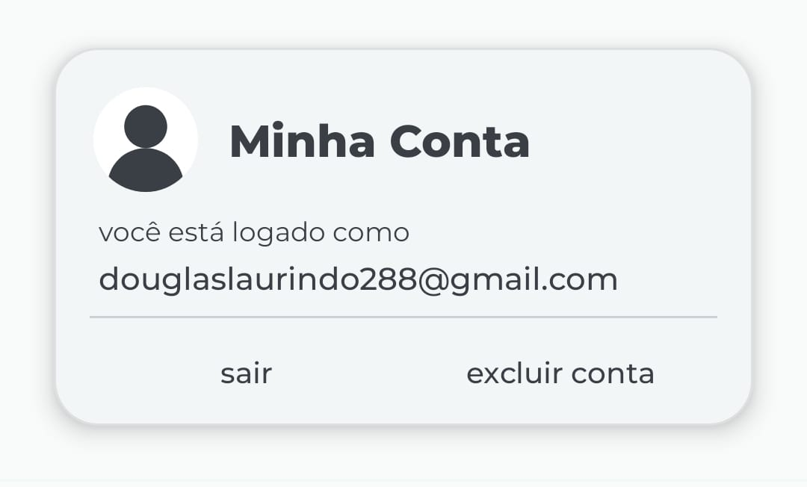
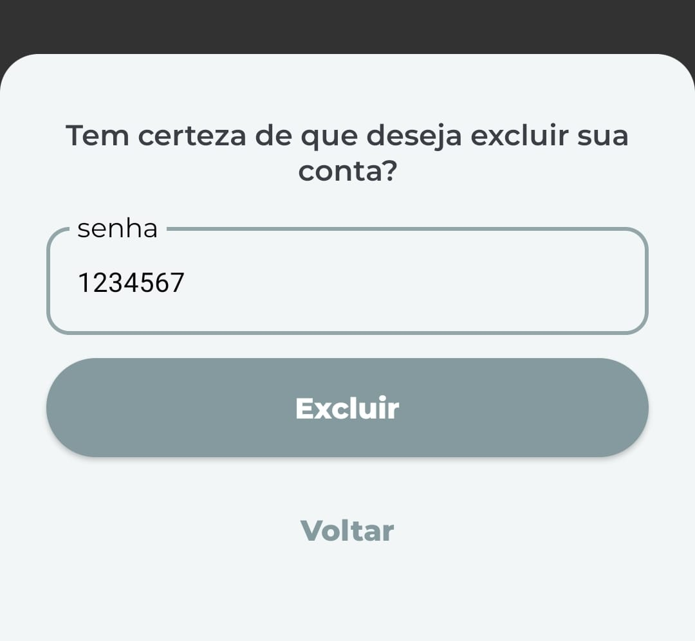

Como Excluir sua conta no app Jesus Today
Siga os 3 passos abaixo para poder excluir sua conta com sucesso
1° Passo - Entre em configurações
Clique no ícone de engrenagem na tela inicial do app, localizado no canto superior direito da tela.
2° Passo - Clique em "Excluir Conta"
Clique no texto "excluir conta" para poder dar continuidade no processo de exclusão de sua conta

3° Passo - Autenticar e Excluir
Finalmente, preencha o campo de texto com a sua senha e depois clique em excluir para finalizar o processo, uma mensagem de sucesso ou erro será exibida ao finalizar.
